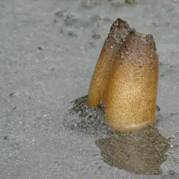
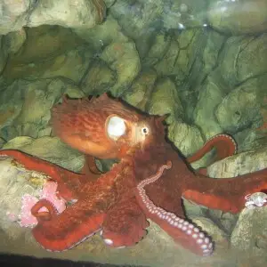
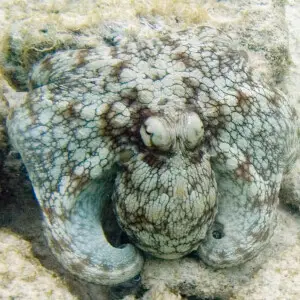

3 SPECIES
The geoduck (*Panopea generosa*) is a large saltwater clam native to the west coast of North America. Known for its impressive size, it can live over 140 years, making it one of the longest-living animals.
Read More
The giant Pacific octopus (*Enteroctopus dofleini*) is the largest octopus species in the world, found in the coastal waters of the Pacific Ocean. It can weigh over 50 kg (110 lbs) and have an arm span of up to .
Read More
The common octopus (*Octopus vulgaris*) is found in tropical and temperate oceans worldwide. This highly adaptable species is known for its problem-solving abilities, camouflage skills, and remarkable escape
Read More